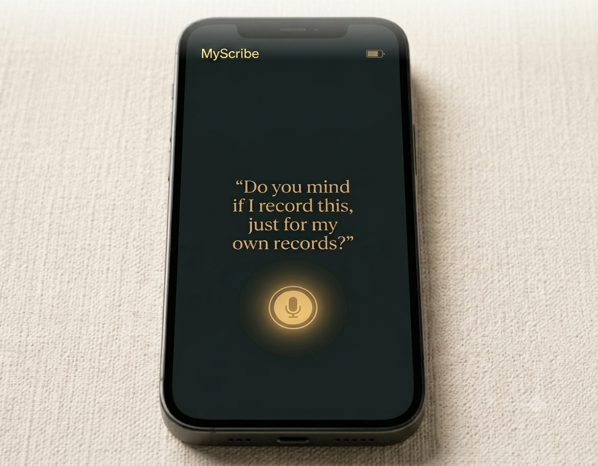
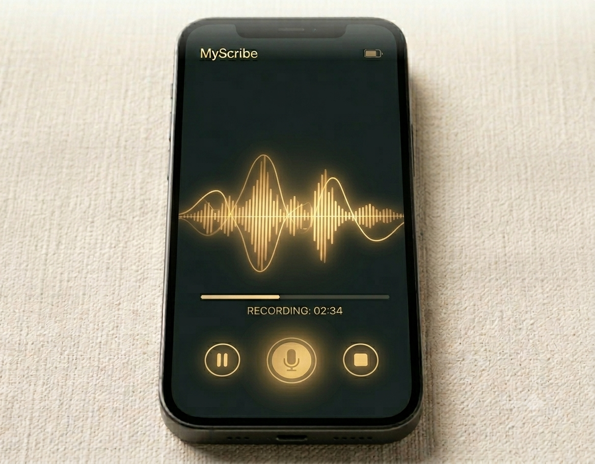

.jpg)
The phone on the desk. The conversation in the room. The note in the patient's hand before they reach the car park.
Neighbourhood CoLab · 2026
The patient records the appointment.
The appointment becomes the note.

The moment it begins
The patient places their phone on the desk. MyScribe prompts them with one question. The clinician nods. The encounter is captured — not for the record, but for the person who needs to remember it.

In the room
No clinician setup. No login. The patient's phone listens. The professional speaks freely. The recording belongs to the patient from the moment it begins.
The phone on the desk. The conversation in the room. The note in the patient's hand before they reach the car park.
Where MyScribe belongs
MyScribe is not a medical device. It is consent-first ambient capture for any professional encounter where the person in the chair needs to leave with clarity.
GP & primary care
Diagnosis, medication review, long-term condition management.
Mental health
IAPT, CMHT, crisis assessment. The most important words are often the ones people forget first.
Cancer pathway
Diagnosis conversations, treatment decisions, palliative planning.
Legal
Solicitor consultations, legal aid assessments, court welfare interviews.
Financial advice
Debt counselling, benefit entitlement, mortgage and pension conversations.
Housing
Housing officer assessments, eviction prevention, homelessness pathway.
Multi-agency pathway
MARAC, safeguarding, ICB care reviews. Where the most vulnerable people navigate the most complex systems.
Unpaid carers
Carer assessments, support planning, respite conversations.
Domestic abuse
IDVA and perpetrator programme sessions. Record-keeping as a tool of safety and accountability.
"Nothing for completeness.
Everything for utility."
The CoLab methodology · After Notes
The companion product
Where MyScribe captures the encounter, After Notes distils it. Generated at the GP approval moment and delivered to the patient's phone before they leave the car park, an After Note is plain-language, purposeful, and built on a single principle: the patient should leave knowing exactly what was decided and what happens next.
After Notes is in active development with Lexacom and in early-stage collaboration with UCLH's ICU discharge pathway.
Who we are
A community interest company built around a single conviction: that the encounter between a person and a professional is the most important unit of care, and the most neglected moment in digital health.
CoLab brings together primary care, clinical psychology, nursing, and social work. We are practitioners first. The products are the evidence of the methodology.
MyScribe · After Notes · Neighbourhood CoLab CIC
hello@neighbourhoodcolab.co.uk